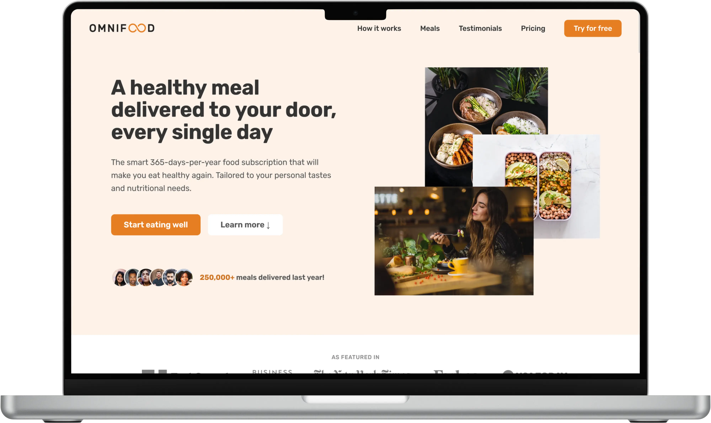
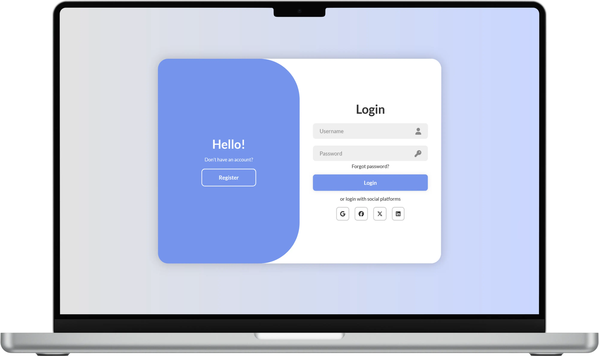
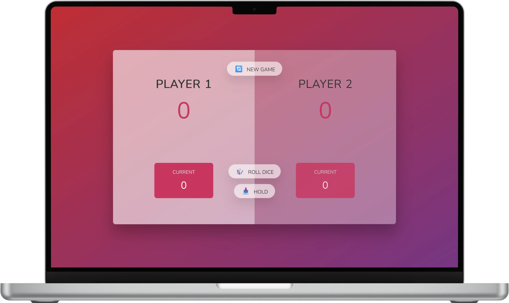
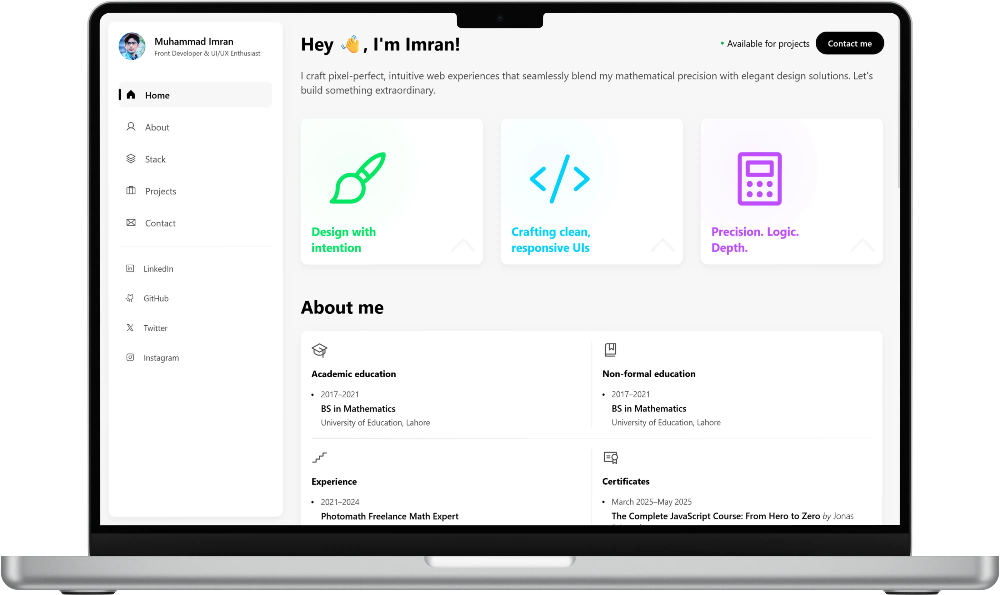

muhammad imran · multan, pakistan
I help train frontier AI, & build clean things when the sun goes down.
Primarily, I contribute STEM annotations and benchmark tasks to the projects that train state-of-the-art language models. Alongside that — a deep love for pixel-perfect interface design, and one-on-one tutoring in mathematics, coding, and Arabic.
What I do, ranked by how much time it gets.
Training frontier AI
STEM annotations, agent trajectories, benchmark authoring — with Mindrift, SciCode, and previously Photomath. Mathematics, graphs, and agents are where I spend most of my days.
Pixel-perfect interfaces
My passion. HTML, CSS, JavaScript, React — obsessed with typography, spacing, motion, and accessibility. The craft I do when I'm not annotating.
Mathematics, coding, Arabic
Online tutoring in three disciplines — secondary & intermediate mathematics, programming, and Quranic Arabic. Also: an open library of interactive chapter solutions.
Training frontier AI, one careful annotation at a time.
My main work is contributing the human signal that makes state-of-the-art language models better — mostly in STEM, agents, and graph-structured reasoning. It's meticulous, rigorous, and quietly important.
Mindrift CI-STEM
Crafting prompts with structurally hard number-theoretic backbones — Collatz dynamics, Mertens function, aliquot sequences — designed to force genuine computation rather than pattern-matched answers. Framework currently at v6.
SciCode Benchmark
Reviewing and authoring scientific computation tasks in structured JSON — e.g. a corrected ETDRK4 solver for the nonlinear Schrödinger equation. Each task audited against a seven-point structural-defect checklist.
Photomath
Authored and reviewed step-by-step solutions for the Photomath training corpus — across algebra, geometry, calculus, and word problems. The work taught me how much a correct final answer can hide a broken middle.
Where I focus.
The bench.
- Python
- NumPy
- SymPy
- SciPy
- Matplotlib
- LaTeX
- Overleaf
- KaTeX
- Pandoc
- Jupyter
- Git
- JSON schemas
- React (eval UIs)
- Claude
- ChatGPT
- Gemini
- Custom prompt harnesses
Selected frontend work.
A passion project that's become a second discipline. I care about typography, spacing, motion, and the small details that separate a page that works from a page that feels right.

Omnifood
Fully responsive marketing landing page for a fictional AI-powered food delivery service. Fluid layouts, accessible forms, careful vertical rhythm.

Modern animated login / signup
A smooth, animated authentication flow exploring state transitions, layered motion, and form validation — a study in how small interactions change perceived quality.

The Pig Game
Two-player dice game with clean state handling, turn management, and restrained visual feedback. An exercise in tight, readable vanilla JavaScript.

The site you're reading
A multi-page portfolio built to demonstrate typographic restraint, responsive grid work, motion on scroll, and accessible forms — no frameworks, everything handwritten.
Frontend stack.
- Figma
- Framer
- Canva
- Miro
- HTML
- CSS
- JavaScript
- React
- Tailwind CSS
- WordPress
- LaTeX
- Overleaf
- Notion
- Markdown
- Git & GitHub
- Netlify
- Chrome DevTools
- ChatGPT
Three disciplines. One approach.
I tutor in three things I care about deeply: mathematics for Pakistani secondary and intermediate students; programming for self-taught learners and university students; and Quranic Arabic for those wanting to understand what they recite. Live one-on-one sessions, online, worldwide.
Mathematics
Classes 9 – 12 on Punjab Textbook Board and Federal Board syllabi. Also: interactive chapter-by-chapter solution notebooks, free to use.
- Matric & FSc Mathematics
- PTB + FBISE syllabi
- Live sessions + written notes
- Video walkthroughs
Coding
From first Python script to your first deployed web app. Programming fundamentals, algorithmic thinking, and front-end development — taught the way I wish I'd been taught.
- Python fundamentals
- Web dev (HTML, CSS, JS)
- Algorithms & problem solving
- University CS support
Arabic & Quran
Quranic recitation with tajweed, Classical (Quranic) Arabic grammar, and conversational Modern Standard Arabic. For learners who want to understand, not just recite.
- Quran recitation & tajweed
- Classical Arabic grammar
- Quranic vocabulary
- Modern Standard Arabic basics
Mathematics — classes I teach.
Online solutions.
A growing library of free, interactive, chapter-by-chapter solution notebooks. Every example worked through step-by-step, with inline explanations, LaTeX-rendered equations, and short video walkthroughs — not the terse, hand-scribbled "key" style students have been stuck with for decades.
Real Numbers — Class 9, Unit 1
The first complete notebook in the series. Every worked example, every exercise problem, every review question — with inline footnote explanations, LaTeX equations, and step-by-step reasoning you can follow at your own pace.
Open the chapterLogarithms — Class 9, Unit 2
Next up in the Class 9 series. Common and natural log laws, change of base, solving exponential equations, and applied problems.
Integration — FSc Part II, Unit 3
Definite and indefinite integrals, techniques of integration, applications — same structure as the Class 9 notebooks but for 12th-grade.
A mathematician who fell in love with tech.
I was a mathematics major who kept being pulled toward tech. I eventually found my niche — but the maths never left.
My primary work is STEM annotation and benchmark authoring for the projects that train state-of-the-art language models. I've contributed to Mindrift's CI-STEM programme, SciCode's benchmark library, and previously to Photomath's step-solution corpus. The work sits at the seam of pure mathematics and engineering rigour, which is exactly where I like to be.
Frontend is my passion. I've always loved aesthetic, accurate, pixel-perfect work — interfaces that respect typography, spacing, and motion. It's the craft I reach for when I'm not annotating. I build with HTML, CSS, JavaScript, and React, and I care deeply about accessibility and performance.
Tutoring is my third thread. Because I loved maths so much as a student, I wanted to help students in Pakistan and worldwide have a better experience than the terse, hand-scribbled "keys" we grew up with. I teach Classes 9–12 mathematics, programming, and Quranic Arabic — and I'm building a library of interactive, beautifully-typeset solution notebooks to replace the old textbook keys.
One instinct runs through everything: make the complicated thing feel obvious.
Research collab, frontend brief, or a tutoring enquiry?
All three welcome. Tell me what's on your mind — the more specific the better. If it's a tutoring enquiry, mention the subject and level; if it's frontend, link a reference or a brief; if it's research, tell me the project or platform.